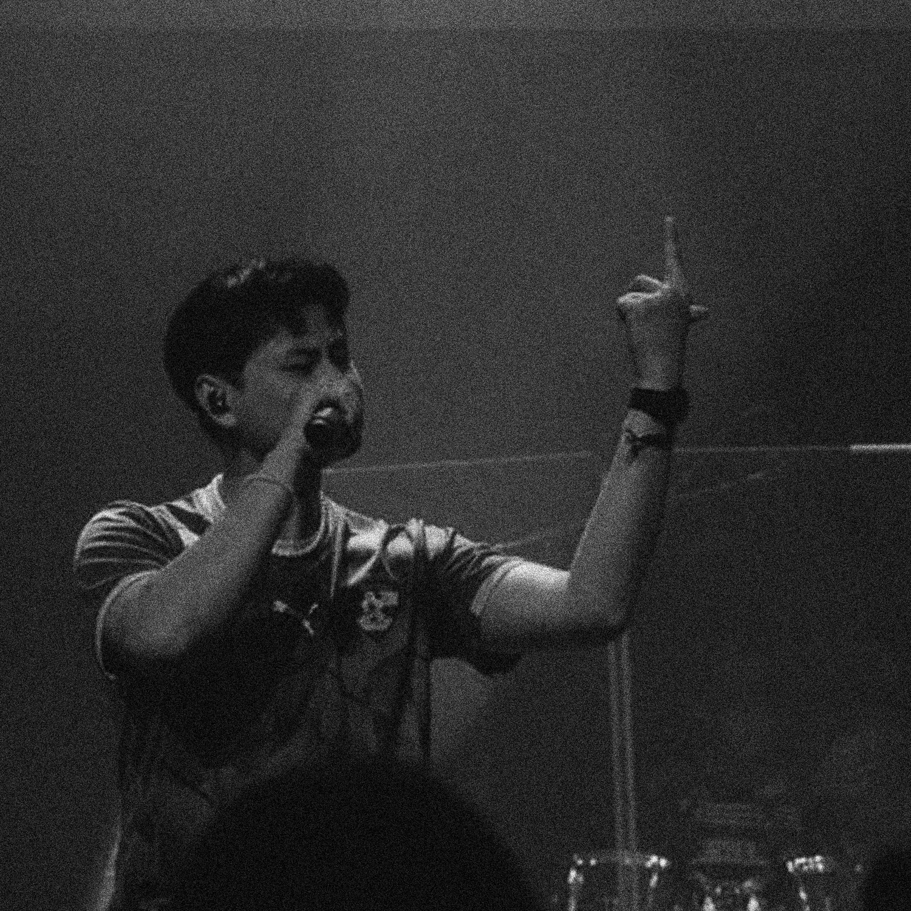

ABOUT ME
I'm NAGLANG, an artist who grew up in an unstable home with violence and an underground environment.
After a lifetime of struggling with PTSD, I've found my way to peace. I created this space to share my story and resources with others on a similar path.
You are not alone—hope is always possible.

FELLOWSHIP & COMMUNITIES
For a long time, I found more comfort in my friends than in my own family. I thrived in fellowships and communities where I felt seen and understood without judgment. These "chosen families" were my sanctuary when things felt too heavy at home.
The beauty of healing is that it gives you the strength to bridge old gaps. Now that I have found my own peace, I've been able to reconnect with my family. Healing doesn't just fix your relationship with yourself—it opens the door to heal the bonds with others.
GRATEFULNESS
Even in a happy marriage, triggers still happen. The difference now is that I have a partner I trust completely. Being able to share my struggles and talk normally about the "dark days" with my wife has been a cornerstone of my recovery.
I've learned that the first step to peace is acknowledging reality and accepting it. When you surround yourself with people who truly believe in you and want you to succeed, the burden becomes much lighter to carry.
REJOICE ALWAYS
When things get hard, I consciously work to "renew" my mind. I make a choice to shift my mindset toward thanksgiving and gratitude. It's not about ignoring the pain, but about choosing to rejoice in the small victories every single day.
I've learned to focus on the positive and refuse to dwell in the past. The past is a place of reference, not a place of residence. By staying grateful, I keep my heart open to the possibilities of tomorrow.
MUSIC & ART
Enjoy your hobbies! They might be your ways to cope with things.
For me, creativity is a lifeline. Whether it's writing, playing music, or losing myself in the energy of a concert, my passion keeps me grounded. These are my tools for survival: People to talk to, Hobbies to fuel my passion, and a Life lived with purpose.